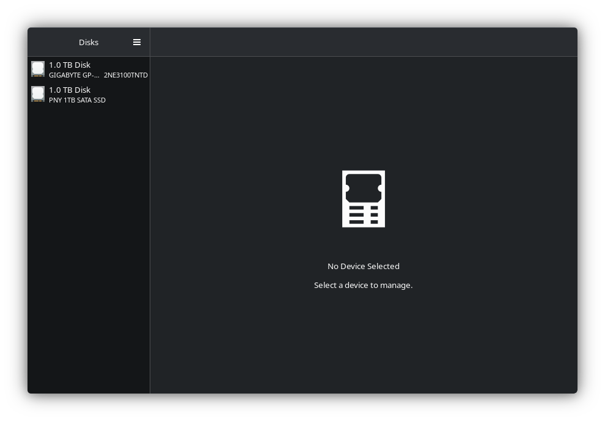
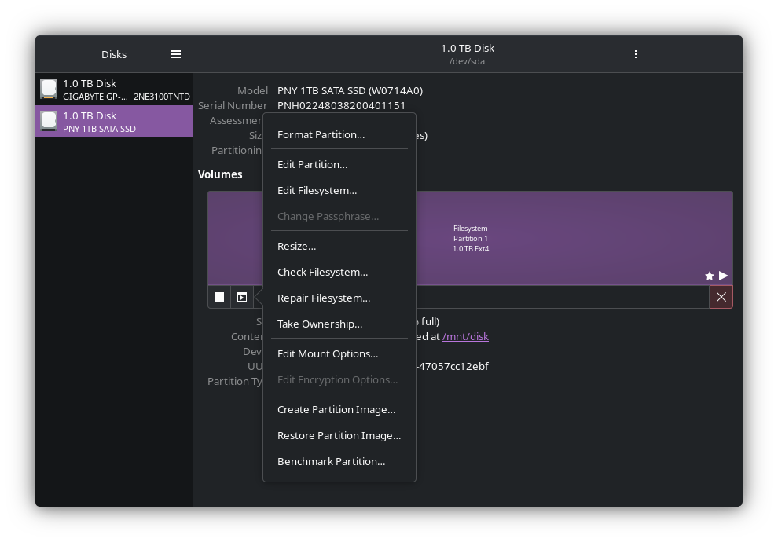
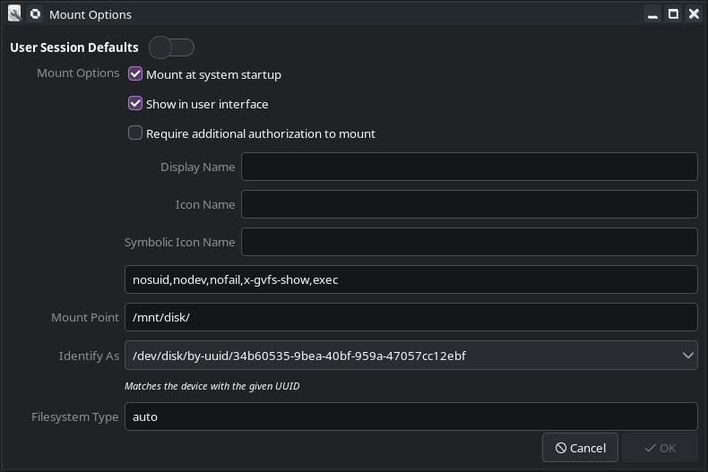
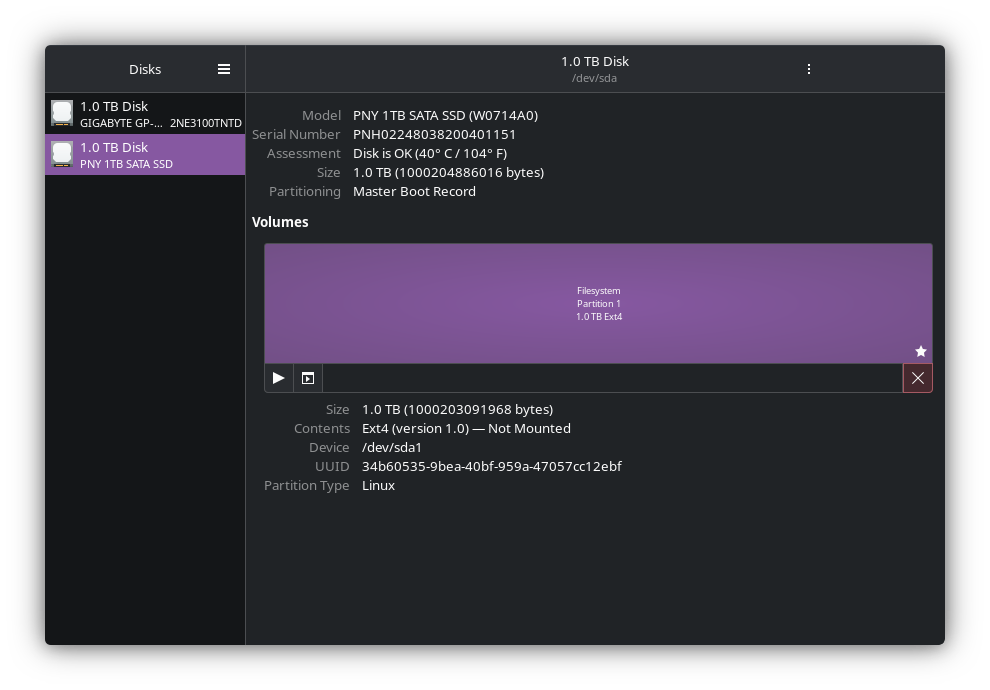

Automontera diskar i Linux
Denna Blogg handlar om hur man automatiskt monterar diskar i Linux.
Introduktion
Ladda ner gnome-disk-utility ifrån din pakethanterare.
Öppna gnome-disk-utility och välj den disk du vill auto-mounta.

Klicka på "additional partition options" och välj "Edit Mount Options".

Av markera "User Session Defaults"
Om du vill använda disken för exempelvis steam spel lägg till ",exec" efter "nosuid,nodev,nofail,x-gvfs-show"
så det blir "nosuid,nodev,nofail,x-gvfs-show,exec"
Ange vart du disken ska ha sina filer exempelvis /mnt/disk
När du är klar klicka på "ok"

klicka på pilen som heter "Mount selected partition" och kolla sedan i din filhanterare. Om allt ser bra ut!
Om allt ser bra ut kan du starta om din dator. Så ska disken automatiskt monteras.
